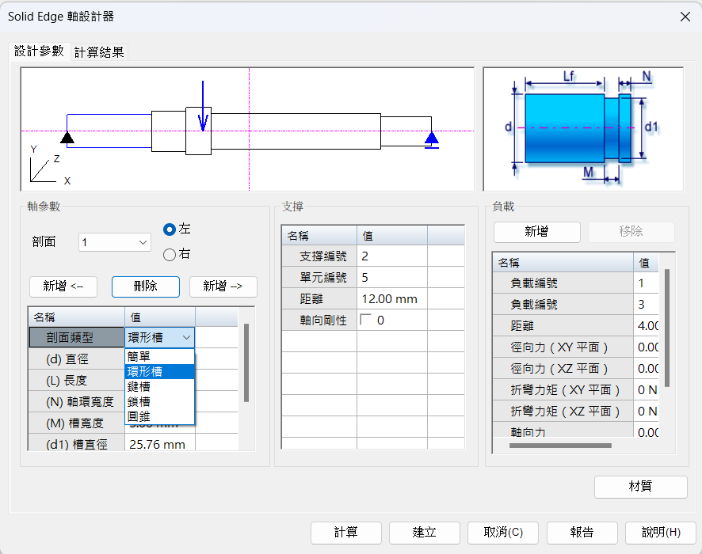
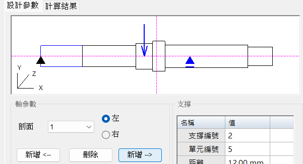
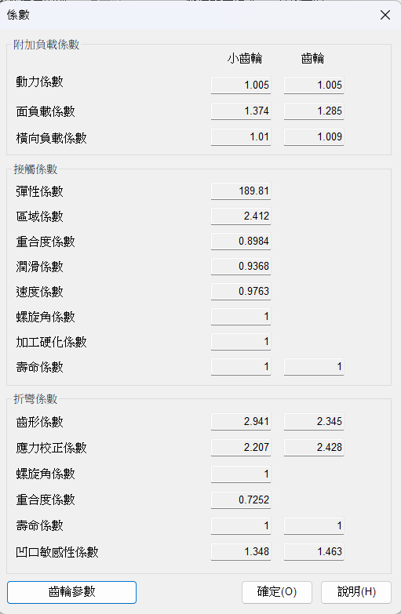
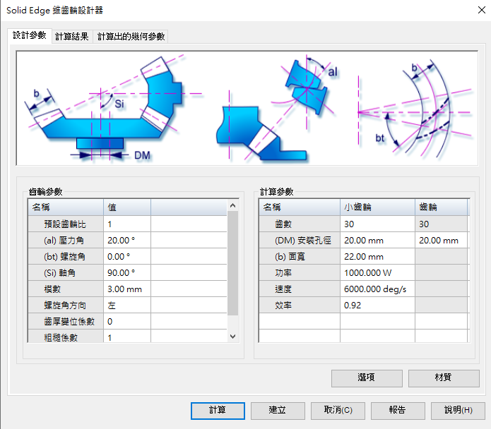
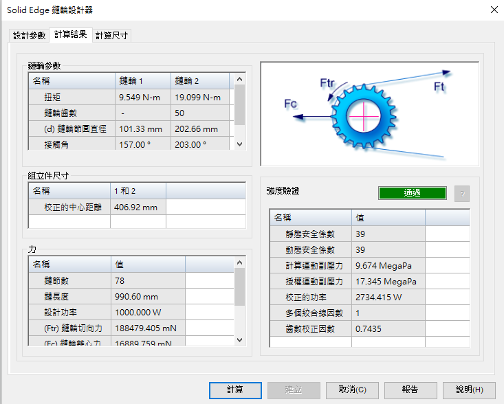

Ch.1專題簡介 <<
Previous Next >> Ch.3案例研究
Ch.2相關文獻探討
相關文獻探討 literature review
回顧 Solid Edge 和 Femap 在機械設計相關專題與研究
工程參照
工程參照是Solid Edge的一種特殊功能，直覺來說就是快速建模，只需要選擇需要的模型形狀，再將數值一一打入，即使不用畫草圖也能迅速的將模型產生。
在工作列上的工具裡能很輕易的找到工程參照，點開有高達13項的模型提供選擇

每種模型的界面都大同小異，有各個尺寸的代號、參數調整，因為還能算出簡易的分析，所以也有支撐(固定)、負載與設定材質的功能，模型預覽的功能因只能做出較簡單的畫面變更，所以只有軸設計器與梁設計器有而已。


支撐、負載、材質都設定完成後，按下計算就會產生下列的計算結果，雖然不是複雜的分析，但需要這些比較簡單的分析結果也是非常的方便且迅速

-軸設計器
在做參數設計只需要打上想要的尺寸即可得到想要的模型，上面預覽所呈現的藍線部分就是對應到下面軸參數的數值，也能隨時改變剖面的類型，自由度非常的高，但須注意的是預覽部分並不會將各個剖面的類型顯現出來，所以預覽的畫面並非是建立出來的完整模型
支撐功能裡的支撐編號是預覽畫面中的藍色三角形，左邊的三角形是程式預設的固定邊，而右邊的三角形會根據單元編號的改變所移動，支撐編號只有1(預設固定邊)與2(單元編號)提供選擇
負載功能也有一些相較簡單的力能輸入，力的位置也會顯示在預覽畫面上，材質部分也有預設一些比較常用到的材料，如果沒有的話，也只要將需要的材料性質輸入進去即可

剖面選擇的數值是模型從左到右開始算的第幾個剖面

新增的功能就是在所選擇的剖面左/右邊新增新的剖面

-凸輪設計器
與軸設計器相同，一樣有著參數以及負載的數值可以輸入，上面畫面一樣是各數值所代表的部位，而在凸輪參數最下列還有一項周速的數值是不可調整的，是直接經由上列數值所計算出來的
>>材質
>>計算結果
點擊計算後會來到計算結果的頁面，左上畫面是左下角圖形選項的結果，有位移、速度、加速度和躍度提供選擇；而右上的圖形是設計參數計算出來的凸輪輪廓，藍色線是基圓紅色線則是凸輪的形狀；在來是段的選擇，總共有3段的選項，分別是1(0°~120°)、2(120°~240°)、3(240°~360°)
各段的設定也都是可以各別做調整的，右邊也會有一些常用的最大數值及時計算出來提供參考
-直齒輪設計器
開啟畫面一樣是分成3大部分，代號部位介紹、齒輪參數和計算參數
>>選項

>>計算結果
計算結果這邊因設計器的預設是設計一組齒輪的，所以結果會呈現兩顆齒輪聶合的基本資訊，也會有兩顆齒輪在運動時所產生的各向力作用，以及強度驗證的通過與否
>>係數
計算後結果的各項係數

>>齒輪參數
>>計算出的幾何參數
各項設定計算出來的幾何參數，也就是齒輪最終各部位的基本尺寸
-錐齒輪設計器

>>選項
能調整要計算的分析選項及結果
>>材質
材質的設定
>>計算
設計計算後的分析結果
>>計算出的幾何參數
根據設計參數所生成之錐齒輪的各細項尺寸
-渦輪設計器
有預設的組立件尺寸供使用者直接選擇
>>選項
更細部的各項設定
>>材質
渦桿與渦輪的材質設定
>>計算結果
設計計算後的分析結果
>>係數
計算後結果的各項係數
>>計算尺寸
根據設計參數所生成之渦輪的各細項尺寸
-齒輪齒條傳動裝置設計器
齒輪與齒條的代號介紹及尺寸設定
>>選項
設定尺條類型及計算條件
>>材質
齒輪齒條的材質設定
>>計算結果
依照參數設定計算出的結果
>>係數
計算結果的各項係數
>>齒輪參數
螺旋角的限制偏差設定
>>計算尺寸
根據設計參數所生成之齒輪與齒條的各細項尺寸
-鍊輪設計器
鍊條與鍊輪的參數設定
>>選項
設計參數的輸入條件
>>計算結果
參數設計的計算結果

>>計算尺寸
根據設計參數所生成之鍊輪的各細項尺寸，齒輪尺寸有最大與最小值之分
-壓縮彈簧設計器
壓縮彈簧的尺寸設定
>>選項
設計參數的輸入條件
>>材質
材質設定

>>計算結果
根據設計參數所生成之壓縮彈簧的各細項尺寸
-拉伸彈簧
拉伸彈簧尺寸輸入
>>選項
參數輸入條件
>>材質
拉伸彈簧材料設定
>>計算結果
根據設計參數所生成之拉伸彈簧的各細項尺寸
-同步帶輪設計器
同步帶輪尺寸輸入
>>選項
參數輸入條件
>>計算結果
計算後結果的各項係數
>>計算尺寸
根據設計參數所生成之同步帶輪的各細項尺寸
-帶輪設計器
帶輪的尺寸輸入
>>選項
參數輸入條件
>>計算結果
設計計算後的分析結果
>>計算尺寸
根據設計參數所生成之渦輪的各細項尺寸
-樑設計器
樑的尺寸輸入，與軸設計器相同有設計的預覽畫面

>>材質
樑的材料設定

>>計算結果
設計計算後的分析結果，根據圖形選項得到不同的作用力

-柱設計器
柱的尺寸輸入

>>選項

>>材質

>>計算結果
設計計算後的分析結果

相關理論和概念的討論
Ch.1專題簡介 <<
Previous Next >> Ch.3案例研究